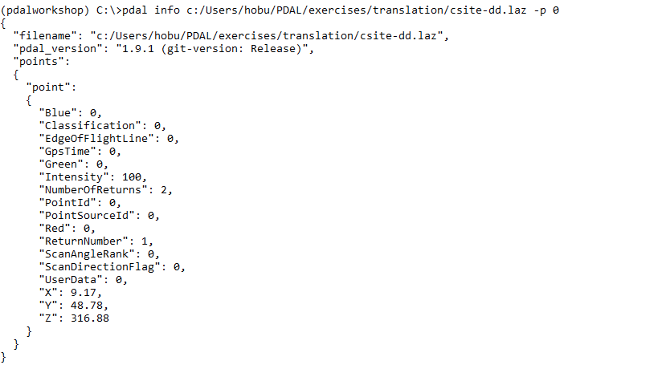

Reprojection
Exercise
This exercise uses PDAL to reproject ASPRS LAS data
Issue the following command in your Conda Shell:
1pdal translate ./exercises/analysis/ground/CSite1_orig-utm.laz \
2 ./exercises/translation/csite-dd.laz reprojection \
3 --filters.reprojection.out_srs="EPSG:4326"
1pdal translate ./exercises/analysis/ground/CSite1_orig-utm.laz ^
2 ./exercises/translation/csite-dd.laz reprojection ^
3 --filters.reprojection.out_srs="EPSG:4326"

Unfortunately this doesn’t produce the intended results for us. Issue the following
pdal info command to see why:
pdal info ./exercises/translation/csite-dd.laz --all \
| jq .stats.bbox.native.bbox
pdal info ./exercises/translation/csite-dd.laz --all ^
| jq .stats.bbox.native.bbox

--all dumps all info information about the file, and we
can then use the jq command to extract out the “native” (same coordinate
system as the file itself) bounding box. As we can see, the problem is
we only have two decimal places of precision on the bounding box. For
geographic coordinate systems, this isn’t enough precision.
Printing the first point confirms this problem:
{kind=link}
Some formats, like writers.las do not automatically set scaling
information. PDAL cannot really do this for you because there are a number
of ways to trip up. For latitude/longitude data, you will need to set
the scale to smaller values like 0.0000001. Additionally, LAS uses
an offset value to move the origin of the value. Use PDAL to set that
to auto so you don’t have to compute it.
1pdal translate \
2./exercises/analysis/ground/CSite1_orig-utm.laz \
3./exercises/translation/csite-dd.laz reprojection \
4--filters.reprojection.out_srs="EPSG:4326" \
5--writers.las.scale_x=0.0000001 \
6--writers.las.scale_y=0.0000001 \
7--writers.las.offset_x="auto" \
8--writers.las.offset_y="auto"
1pdal translate ^
2./exercises/analysis/ground/CSite1_orig-utm.laz ^
3./exercises/translation/csite-dd.laz reprojection ^
4--filters.reprojection.out_srs="EPSG:4326" ^
5--writers.las.scale_x=0.0000001 ^
6--writers.las.scale_y=0.0000001 ^
7--writers.las.offset_x="auto" ^
8--writers.las.offset_y="auto"

Run the pdal info command again to verify the X, Y, and Z
dimensions:
{kind=link}
Notes
filters.reprojection will use whatever coordinate system is defined by the point cloud file, but you can override it using the
in_srsoption. This is useful in situations where the coordinate system is not correct, not completely specified, or your system doesn’t have all of the required supporting coordinate system dictionaries.PDAL uses Proj.4 library for reprojection. This library includes the capability to do both vertical and horizontal datum transformations.